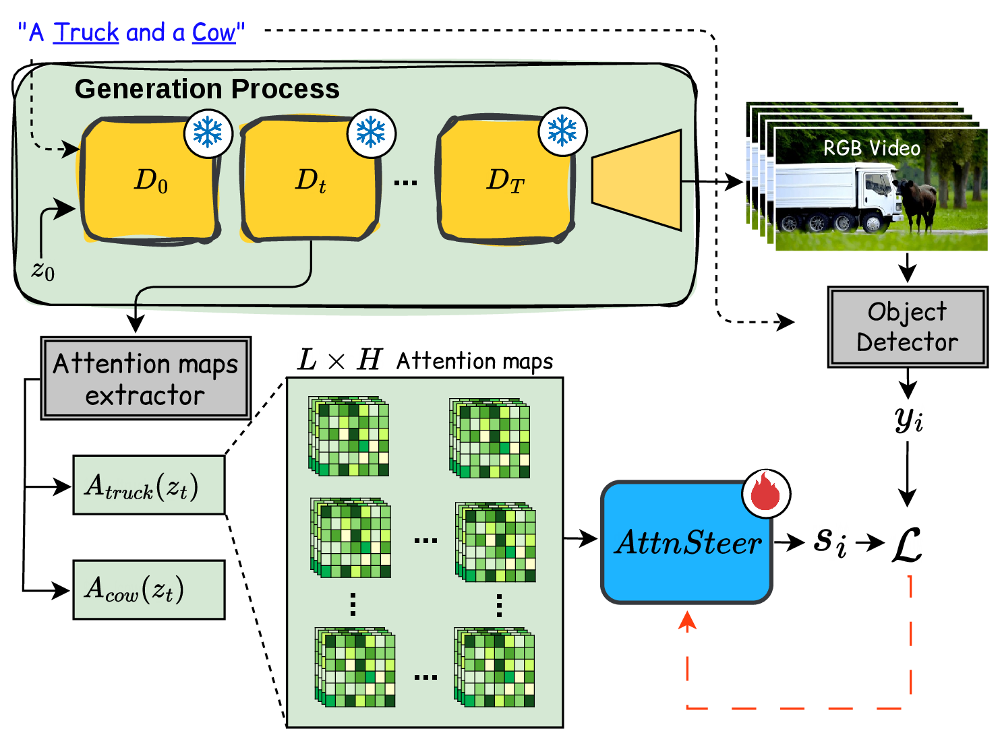
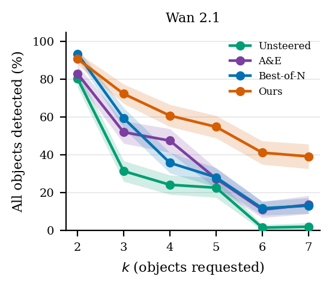
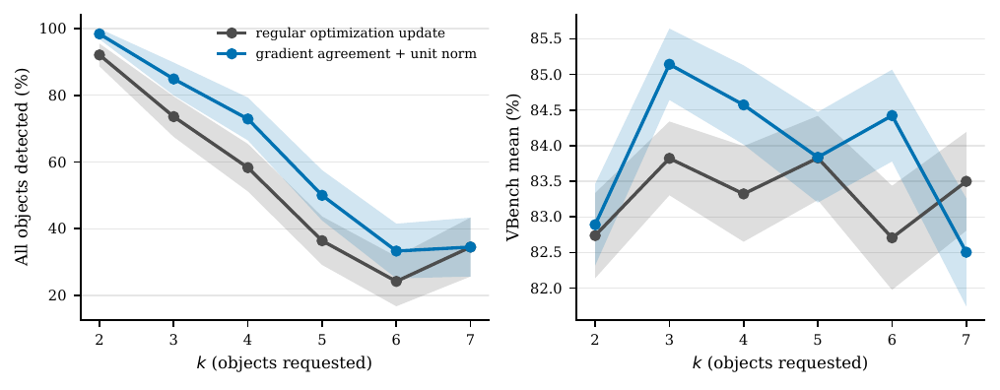

More examples (supplementary, LTX-2), GIF downloads:
- Single object: teddy bear · giraffe · remote · person · fire hydrant
- Static + dynamic: boat + airplane · teddy bear + frisbee · bicycle + car
Text-to-video diffusion models generate increasingly realistic videos, yet often fail to render all objects requested by the prompt, particularly as the number of objects grows. Improving such fine-grained adherence through training requires substantial video supervision, motivating inference-time methods that steer intermediate diffusion latents. Existing approaches typically define hand-crafted objectives over cross-attention maps, relying on indirect attention statistics rather than whether the model ultimately renders a requested object.
We propose AttnSteer, a learned attention-steering model that predicts object rendering directly from intermediate cross-attention. AttnSteer is trained entirely on the generator's own trajectories using automatically obtained detector labels and contains only 37k parameters. At inference time, its predictions define differentiable objectives for steering object presence; the same framework also extends to frame-level temporal control. AttnSteer improves all-objects accuracy over the strongest baseline from 49.0% to 61.9% on LTX-2 and from 42.1% to 46.5% on Wan 2.1, and raises temporal specificity from 35.7% to 52.6%, at comparable video quality.
LTX-2 · All-objects accuracy
61.9%
A&E → AttnSteer (ours)
Wan 2.1 · All-objects accuracy
46.5%
A&E → AttnSteer (ours)
LTX-2 · Temporal specificity
52.6%
TempoControl → AttnSteer (ours)
At inference time, the probe's predictions define differentiable objectives for steering object presence. The video latent is optimized while the generator stays fixed. For multi-object prompts, independent per-object updates can conflict: we normalize each object's gradient, anchor the update on the object least likely to be rendered, and suppress locally opposing contributions.

We train a small probe to predict whether each requested object will be rendered, using per-step, per-layer, per-head cross-attention features from the frozen generator. Labels come from detectors run on the generator's own final videos, so no external video supervision is needed.

We evaluate on 473 short prompts with the extended VBench object benchmark. The table reports the detection ratio and the fraction of clips where all requested objects are detected, overall and by k, the number of requested objects. The gain grows with k.



All-object accuracy vs. prompt complexity (k objects). Bands show ±1 SE.
| Model | Params | Det. ratio (%) ↑ | All-object accuracy (%) ↑ | Quality (%) ↑ | Inference cost | |||||||||
|---|---|---|---|---|---|---|---|---|---|---|---|---|---|---|
| mean | k=2 | 3 | 4 | 5 | 6 | 7 | VBench | MUSIQ | Upd. ↓ | Time(s) ↓ | ×base ↓ | |||
| Wan 2.2 | 5 B | 78.9 | 38.3 | 87.5 | 52.5 | 35.0 | 35.0 | 7.5 | 9.6 | 84.4 | 75.4 | — | — | — |
| LTX-2.5 | 22 B | 62.1 | 17.5 | 45.0 | 16.3 | 17.5 | 11.3 | 8.7 | 5.5 | 86.9 | 73.6 | — | — | — |
| MiniMax-H3 | 33 B | 84.6 | 49.7 | 90.0 | 55.0 | 33.8 | 48.7 | 36.2 | 32.9 | 81.5 | 64.8 | — | — | — |
| Wan 2.1 | 1.3 B | 73.4 | 27.1 | 80.6 | 31.5 | 24.3 | 22.7 | 1.6 | 2.1 | 79.9 | 75.5 | 0 | 26.2 | 1.00× |
| + Best-of-N | 81.7 | 40.4 | 93.6 | 59.5 | 35.9 | 28.2 | 11.8 | 13.2 | 80.1 | 75.5 | 0 | 78.5 | 3.00× | |
| + A&E | 79.8 | 39.2 | 83.1 | 52.1 | 47.6 | 27.5 | 11.1 | 13.7 | 79.2 | 71.8 | 53 | 66.4 | 2.54× | |
| + Ours | 89.3 | 59.9 | 90.9 | 72.4 | 60.9 | 54.9 | 41.3 | 39.3 | 82.5 | 74.6 | 23 | 70.2 | 2.68× | |
| LTX-2 | 22 B | 78.9 | 38.3 | 75.6 | 60.3 | 35.5 | 26.3 | 20.0 | 12.1 | 83.7 | 70.6 | 0 | 59.8 | 1.00× |
| + Best-of-N | 85.9 | 51.1 | 88.6 | 67.5 | 49.4 | 45.6 | 30.4 | 25.0 | 84.3 | 70.7 | 0 | 179.4 | 3.00× | |
| + A&E | 78.3 | 37.8 | 74.7 | 52.6 | 33.3 | 27.8 | 25.7 | 12.5 | 84.1 | 70.5 | 55 | 149.2 | 2.50× | |
| + Ours | 93.9 | 75.5 | 95.0 | 86.7 | 84.4 | 68.9 | 65.7 | 52.3 | 83.5 | 71.3 | 30 | 145.5 | 2.43× | |
| CogVideoX-5B | 5 B | 73.1 | 30.5 | 80.0 | 54.1 | 20.3 | 13.4 | 8.6 | 6.5 | 79.5 | 66.6 | 0 | 135.0 | 1.00× |
| + Best-of-N | 82.2 | 43.9 | 92.4 | 73.4 | 40.5 | 27.0 | 21.1 | 8.8 | 79.3 | 67.4 | 0 | 404.9 | 3.00× | |
| + A&E | 87.3 | 56.1 | 92.4 | 69.7 | 52.9 | 49.3 | 43.3 | 28.8 | 79.1 | 65.6 | 54 | 358.5 | 2.66× | |
| + Ours | 91.2 | 65.9 | 94.9 | 81.8 | 64.4 | 61.1 | 57.1 | 36.2 | 78.4 | 70.6 | 13 | 278.9 | 2.07× | |
Bold = best within backbone block; underline = best overall. Inference cost measured on a single H100 GPU; ×base = multiple of un-steered generation time.
LTX-2. The unsteered backbone misses or weakly renders the requested object, while A&E can distort it. Download as GIF: oven · horse · orange.
Requested objects are listed under each example. Red marks objects neglected by the unsteered backbone. AttnSteer recovers them while preserving the scene better than A&E.
Same protocol as above.
The same learned objective transfers to a third backbone. AttnSteer improves all-objects accuracy over A&E at every k, from 47.3% to 58.0% on average across k=2–7, and also raises the fraction of requested objects that are detected. Values are ±SE over about 80 prompts per k (73 at k=7); the mean over k has SE √(ΣSEk²)/6.
| Model | k=2 | k=3 | k=4 | k=5 | k=6 | k=7 | Mean |
|---|---|---|---|---|---|---|---|
| All objects detected (det-all, %) | |||||||
| CogVideoX-5B | 80.0 ±4.5 | 43.8 ±5.5 | 20.0 ±4.5 | 11.2 ±3.5 | 2.5 ±1.7 | 0.0 ±0.0 | 26.2 ±1.5 |
| + A&E | 80.0 ±4.5 | 68.8 ±5.2 | 47.5 ±5.6 | 43.8 ±5.5 | 26.2 ±4.9 | 17.8 ±4.5 | 47.3 ±2.1 |
| + AttnSteer | 93.8 ±2.7 | 86.2 ±3.9 | 57.5 ±5.5 | 47.5 ±5.6 | 31.2 ±5.2 | 31.5 ±5.4 | 58.0 ±2.0 |
| Objects detected (det-ratio, %) | |||||||
| CogVideoX-5B | 88.9 ±2.7 | 74.9 ±2.8 | 69.5 ±2.4 | 61.4 ±2.3 | 57.9 ±2.3 | 55.1 ±2.6 | 68.0 ±1.0 |
| + A&E | 89.2 ±2.7 | 85.3 ±2.6 | 82.4 ±2.3 | 82.6 ±2.0 | 77.4 ±2.1 | 73.0 ±2.2 | 81.6 ±0.9 |
| + AttnSteer | 96.8 ±1.4 | 94.8 ±1.5 | 85.8 ±2.2 | 88.0 ±1.4 | 83.0 ±1.6 | 82.7 ±1.8 | 88.5 ±0.7 |
CogVideoX-5B, 16 frames. Detection is the majority vote of the scoring detectors, on prompts scored in all three arms.
Unit-normalized gradient agreement improves object presence for k=2–6 over plain averaging of per-object gradients. The figure below compares the two rules.

The training labels and the main evaluation use the same detectors, so we re-score identical LTX-2 clips with each detector alone and with YOLOv10, which was not used in training or labeling. The relative gain over the unsteered backbone holds under every detector. Under YOLOv10, the Attend-and-Excite gain is not significant, while the AttnSteer gain remains large.
| Detector | Detection ratio (%) | Change vs. unsteered (%) | |||
|---|---|---|---|---|---|
| unsteered | + A&E | + AttnSteer | + A&E | + AttnSteer | |
| Three-detector majority | 74.4 ±1.0 | 82.2 ±0.8 | 87.6 ±0.7 | +10.5 ±1.8 | +17.8 ±1.8 |
| GRiT | 58.6 ±1.2 | 64.8 ±1.2 | 73.8 ±1.1 | +10.7 ±3.1 | +26.0 ±3.2 |
| Grounding DINO | 83.8 ±0.8 | 90.0 ±0.7 | 90.3 ±0.6 | +7.3 ±1.3 | +7.7 ±1.3 |
| OWLv2 | 72.0 ±1.0 | 77.9 ±0.9 | 83.3 ±0.8 | +8.2 ±1.9 | +15.7 ±1.9 |
| YOLOv10 (independent) | 27.6 ±1.0 | 27.9 ±1.0 | 32.9 ±1.0 | +1.0 ±5.0 (n.s.) | +19.0 ±5.6 |
Validation AUROC of the per-step steering probes. Each denoising step has its own predictor, so each row is the step whose cross-attention is read.
| Step | LTX-2 | Wan 2.1 |
|---|---|---|
| 0 | 80.0 | 78.2 |
| 1 | 81.7 | 79.1 |
| 4 | 87.4 | 84.8 |
| 7 | 89.9 | 87.3 |
| 10 | 91.2 | 89.1 |
| 15 | 92.1 | 90.1 |
The same learned objective applies frame by frame, so it can control when an object appears. On single-object prompts, where an object must enter at a prescribed time, AttnSteer raises specificity from 31.2% to 52.6%, meaning fewer frames before the requested onset are wrongly filled. Temporal alignment (t-IoU) rises from 40.6% to 45.0%, and VBench quality is unchanged (74.7 vs. 75.1).
| Model | Single object (n=80) | Static + dynamic (n=82) | ||||||||||
|---|---|---|---|---|---|---|---|---|---|---|---|---|
| Prec. | Rec. | Spec. | F1 | t-IoU | R@0.5 | Prec. | Rec. | Spec. | F1 | t-IoU | R@0.5 | |
| LTX-2 | 55.9 | 78.9 | 31.2 | 58.6 | 40.6 | 37.5 | 86.4 | 77.1 | 54.1 | 83.0 | 67.4 | 78.7 |
| + TempoControl | 57.7 | 80.9 | 35.7 | 60.5 | 41.8 | 37.5 | 87.1 | 80.5 | 53.7 | 83.1 | 70.8 | 81.7 |
| + AttnSteer | 63.8 | 68.1 | 52.6 | 62.5 | 45.0 | 45.0 | 87.2 | 84.1 | 52.2 | 85.5 | 74.5 | 85.4 |
TempoControl (left) vs. AttnSteer (right), played in sync. The bar on top is the requested control signal (green: the object should appear in that frame; grey: it should be absent) and the marker follows the current frame. Click a GIF to download it.
The five examples from the main paper (LTX-2, and Wan 2.1 for the teddy bear).
More examples (supplementary, LTX-2), GIF downloads:
@inproceedings{anonymous2027willitrender,
title = {Will It Render? Learned Attention Steering for Object Presence in Text-to-Video},
author = {TODO},
booktitle = {Proceedings of the IEEE/CVF Winter Conference on Applications of Computer Vision (WACV)},
year = {2027}
}